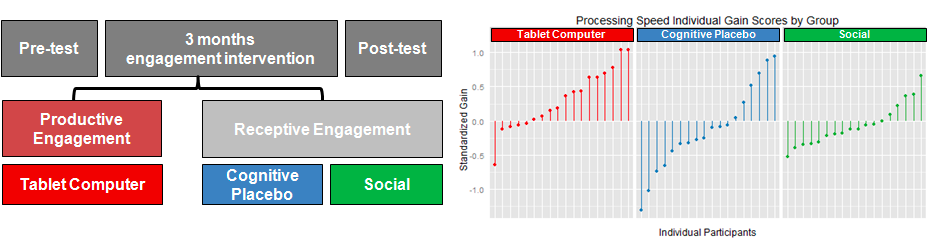

Research Interest
Aging Brain Network: Functional Brain Network Desegregates With Aging

The functional brain network is organized in a way that facilitates specialization, where brain areas with similar function are topologically grouped together, forming a segregated network. This segregated organization decreases with age among healthy adults, and the degree to which the brain network and its corresponding areas are segregated is related to an individual’s brain function and cognitive performance.
Thus far, my work has focused on describing desegregation/de-specialization of the functional brain network on multiple levels (e.g., network-level, sub-network-level, nodal-level). My next goal is to synthesize a more complete picture by examining the aging relationship across levels of organization in the human brain.
Chan et al. (2014). Decreased segregation of brain systems across the healthy adult lifespan. Proc. Natl. Acad. Sci. USA. (Recommended in F1000Prime) | whole-network and sub-network level analyses
Chan et al. (2017). Resting-state network topology differentiates task signals across the adult lifespan. Journal of Neuroscience. | nodal-level and sub-network level analyses
Han, Savalia, Chan…& Wig. (2018). Functional parcellation of the cerebral cortex across the human adult lifespan. Cerebral Cortex. | nodal, sub-network and whole-brain network analyses
Brain-Environment: Socioeconomic Status Moderates Brain Network Desegregation

The brain is constantly receiving and processing signals from one’s environment. During critical periods of child development, huge emphasis is put on constructing an environment that fosters healthy neurodevelopment. However, the brain-environment interaction continues into and throughout adulthood. As shown in a recent study, the aging of brain anatomy and functional brain network varies across socioeconomic status, a proxy for one’s environment.
While the cross-sectional nature of the recent study could not imply causal relation nor rule out cohort effects, an effort to disentangle these ambiguous effects using data from a larger cohort with a longitudinal design is currently in the works.
- Chan et al. (2018). Socioeconomic status moderates age-related differences in the brain’s functional network organization and anatomy across the adult lifespan. Proc. Natl. Acad. Sci. USA.
Cognitive Intervention: Proactive Engagement Through Technological Training

While it is often suggested that older adults should stay ‘active’ or ‘engaged’ to maintain a sharp mind, studies have shown that activities that require an individual to learn a new skill results in some of the strongest effects. It has been shown that older adults trained to use a tablet computer for a variety of tasks over 3 months (15 hr/week) outperform control groups in memory and processing speed. Moreover, there is an added advantage of mastering relevant technological skills for everyday life (e.g., navigating the internet, social media, communication using a smart-phone or tablet computer).
- Chan et al. (2014). Training older adults to use tablet computers: does it enhance cognitive function? The Gerontologist.